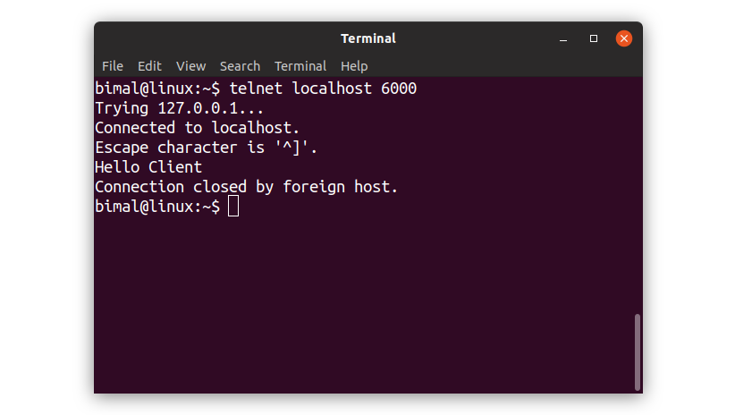

GUI Chat Application in Java using Sockets : The First Part
February 16, 2020Java Socket Programming is used to establish the connection between the application running on different JREs, and Java Sockets are the end-points of that communication. In the client-server based architecture, the two end-points are Client and Server. Client is represented by Socket class and Server is represented by ServerSocket class of Java situated in java.net package.
Client and Server have their input and output streams. We access those streams and make the client and server communicate with each other.
We have divided the task of building GUI Chat App in following steps:
- 1. Create the Server
- 2. Create GUI Client
- 3. Associate client with ClientHandler
- 4. Communication among multiple instances of Clients
We will cover them in series of blog posts.
1. Create the Server
We create a Server class which :
- i) has ServerSocket and a port
- ii) listens clients' requests
- iii) responses to the clients
We implement this in code as :
Test it With Telnet Client
Open your terminal and open a telnet session to request to the server at localhost listening to the port 6000.
Up to now, we got our server running which accept the clients' requests and send them the message "Hello Client".
But, there is a little problem here. The problem is that the Server class is assigned with two responsibilites, first is handling clients and second is starting the problem as it has main method. This, kind of, violates SOLID principle. So, we need to refactor this class. We will do it in subsequent post.
More From This Blog
GUI Chat Application in Java using Sockets : Refactoring Server
Posted on: February 17, 2020
This is the second installment in the series of building a GUI chat application in java using sockets. We Read more....
Mail Sender in Java
Posted on: October 16, 2019
Java provides Mailer APIs for sending and receiving emails via Java Application using any mail servers. In this blog post Read more....
Why Constructors in C++
Posted on: July 14, 2019
Have you ever wondered, why constructors are so important in object oriented languages ? Do you, actually know when Read more....
Rest API With Spring Boot
Posted on: August 24, 2019
REST, stands for Representational State Transfer, which is an architectural style to develop APIs. REST API is an Read more....
API : An Intoduction
Posted on: August 14, 2019
API is a regular term used widely in field of web development. But many people don't have any , or have a vague idea about APIs Read more....
Git : Get Started With
Posted on: September 18, 2019
GIT has been established as a popular and a must-know tool for developers in recent time. Basically, Git is a Read more....
Java Best Practices
Posted on: July 7, 2019
Programming is not just about writing code. It is about writing Clean, Maintainable, Non-Fragile Code and Read more....
Constructors in C++
Posted on: July 9, 2019
Constructors are the special type of member functions that have same name as that of the class. So, if constructors are Read more....